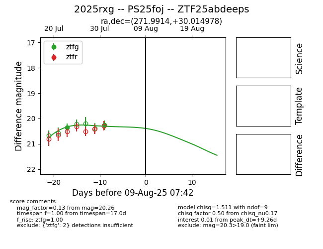

Target 2025rxg at 2025-08-09 07:42, see:
FINK: fink-portal.org/2025rxg
Lasair: lasair-ztf.lsst.ac.uk/objects/2025rxg
ALeRCE: alerce.online/object/2025rxg
TNS: wis-tns.org/object/2025rxg
YSE: ziggy.ucolick.org/yse/transient_detail/2025rxg
alt names
ZTF25abdeeps (ztf,fink)
2025rxg (tns,yse)
PS25foj (panstarrs)
coordinates:
equatorial (ra, dec) = (271.9914,+30.01498)
galactic (l, b) = (56.4887,+21.92528)
photometry
last ztfg=20.26
2 ztfg detections
